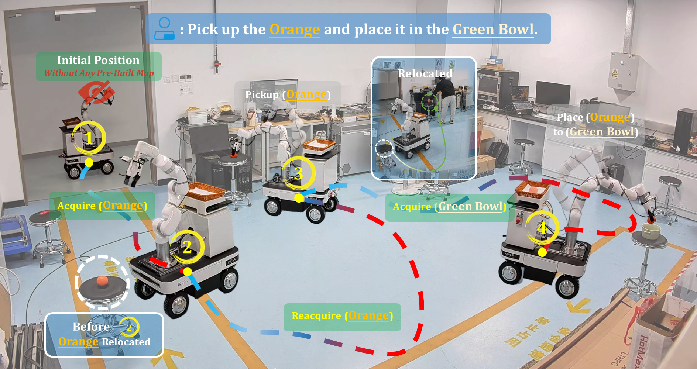
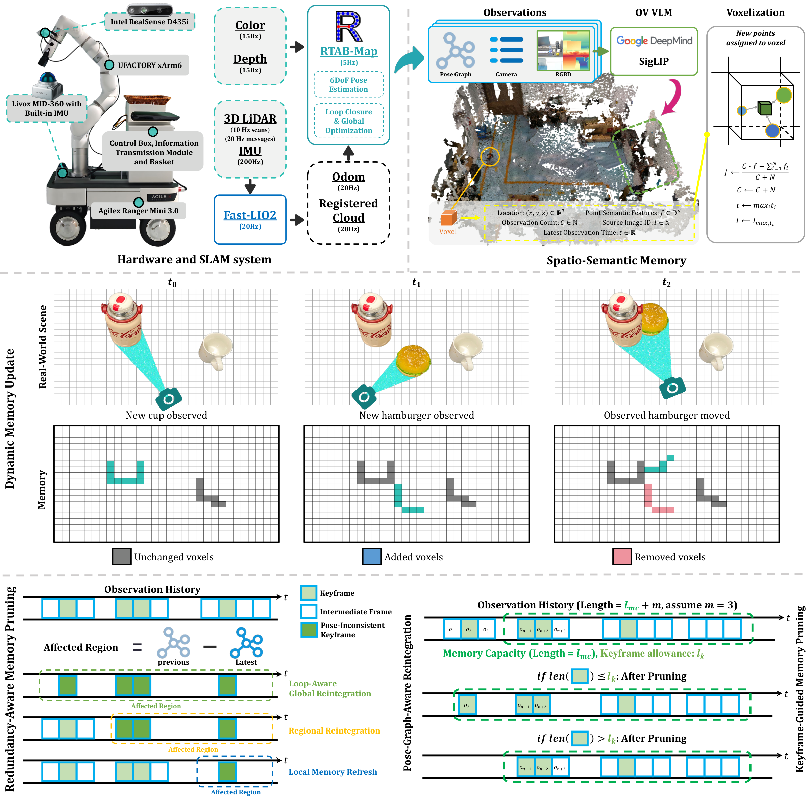
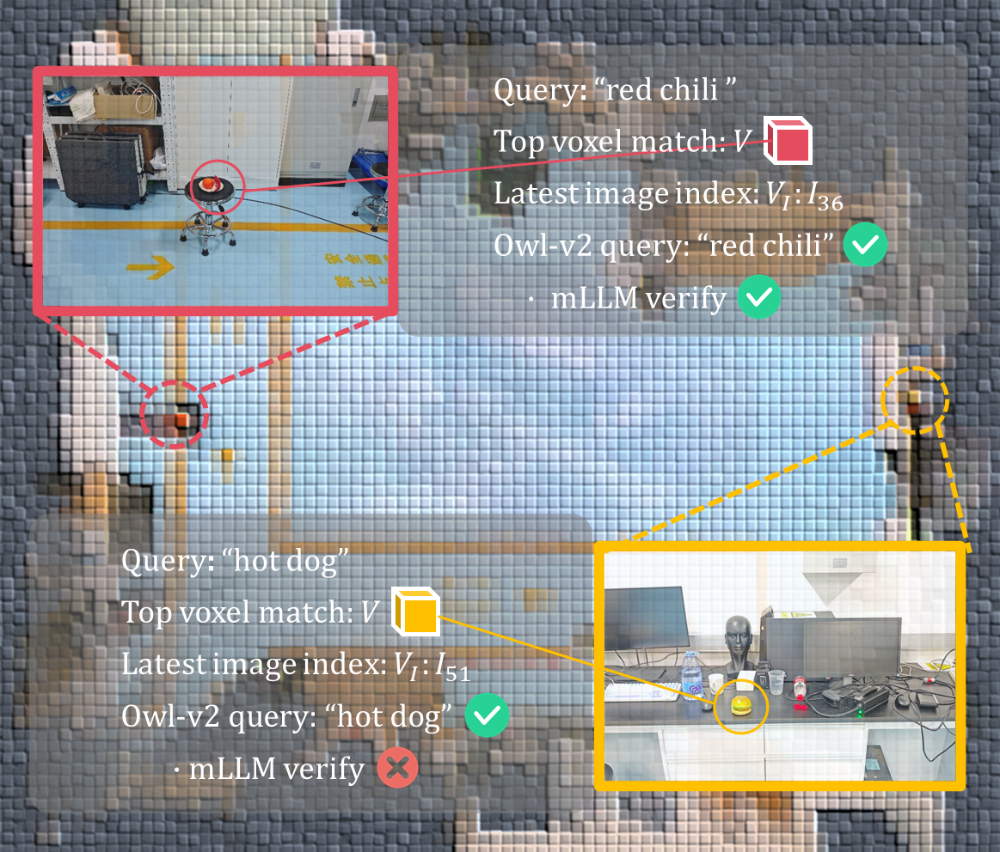
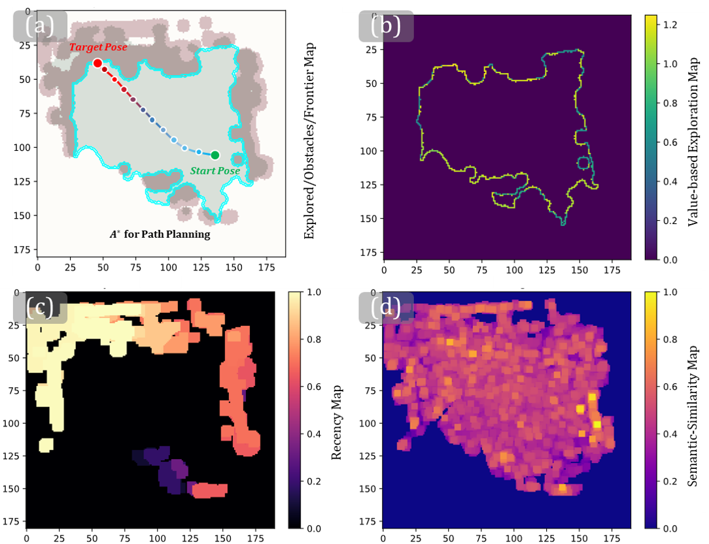

No Pre-Built Map
DREAM operates in dynamic, previously unseen indoor environments from a natural-language instruction.
Mobile manipulation in dynamic indoor scenes
DREAM couples online spatio-semantic memory, hybrid localization, task-oriented navigation, and robust manipulation so a mobile robot can work in previously unseen environments while targets move and the scene changes.

Reliable mobile manipulation in dynamic indoor environments requires a 3D semantic representation that remains consistent with the evolving real world. Most existing systems rely on pre-built maps, assume static environments, or presuppose highly accurate camera poses; when these assumptions break, navigation and manipulation operate on stale information.
DREAM is a mobile manipulation framework for previously unseen indoor environments without any pre-built map. It integrates a lightweight indoor LiDAR-Inertial-Visual SLAM backend with dynamic spatio-semantic memory, Redundancy-Aware Memory Pruning, hybrid localization, task-oriented navigation, and robust grasping and placement strategies.
DREAM operates in dynamic, previously unseen indoor environments from a natural-language instruction.
Online spatio-semantic memory updates voxelized 3D semantics and prunes stale redundant information.
Semantic retrieval and local visual verification help the robot find and reacquire task objects.
The system is evaluated on navigation, pickup, placement, and long-horizon mobile manipulation.
Real robot
Watch DREAM search for objects, recover moved targets, and complete pick-and-place tasks. Each scenario combines views of the robot, localization, and semantic memory.
Main demo 01
Robot motion, localization, and semantic memory during a complete pick-and-place task.
Main demo 02
Target reacquisition and mobile manipulation as object locations change.
More videos
Further examples of object search, navigation, and manipulation in dynamic indoor environments.
Robust SLAM
Localization and mapping across a 100 × 50 m indoor scene, using camera, LiDAR, and base transforms from the robot's CAD model.
Camera and system views
View each scenario through the external camera, SLAM visualization, and semantic memory interface.
Robot, localization, and memory views.
Robot, localization, and memory views.
Indoor simulation
Ten selected tasks in ManiSkill indoor houses. The robot finds an object, searches again when it is moved, and carries it to the requested plate or bowl. Watch the scene, camera image, memory, and route at 4× speed.
Method
DREAM is organized around a closed loop across perception, memory, localization, navigation, and manipulation.
Hardware platform: AgileX Ranger Mini 3.0 mobile base, UFACTORY xArm6 manipulator, wrist-mounted Intel RealSense D435i RGB-D camera, and Livox MID-360 LiDAR with a built-in IMU.



Experiments
DREAM is deployed on a real mobile manipulation robot in four dynamic indoor laboratory environments and is evaluated on navigation, pickup, placement, and long-horizon task success.
Navigation success
Pickup success
Place success
Long-horizon success
Across four scenes, DREAM improves long-horizon success by 10-20 percentage points over the DynaMem baseline while using less spatio-semantic memory and computation.
@misc{yan2026dynamicresilientspatiosemanticmemory,
title={Dynamic Resilient Spatio-Semantic Memory with Hybrid Localization for Mobile Manipulation},
author={Zhijie Yan and Shufei Li and Ze Zhang and Xin Liu and Yuhang Zheng and Zuoxu Wang},
year={2026},
eprint={2606.00576},
archivePrefix={arXiv},
primaryClass={cs.RO},
url={https://arxiv.org/abs/2606.00576},
}